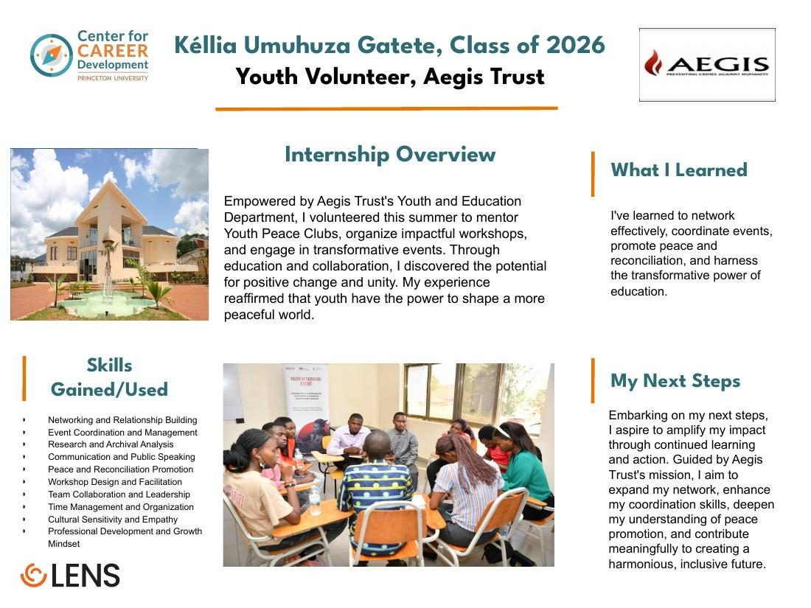
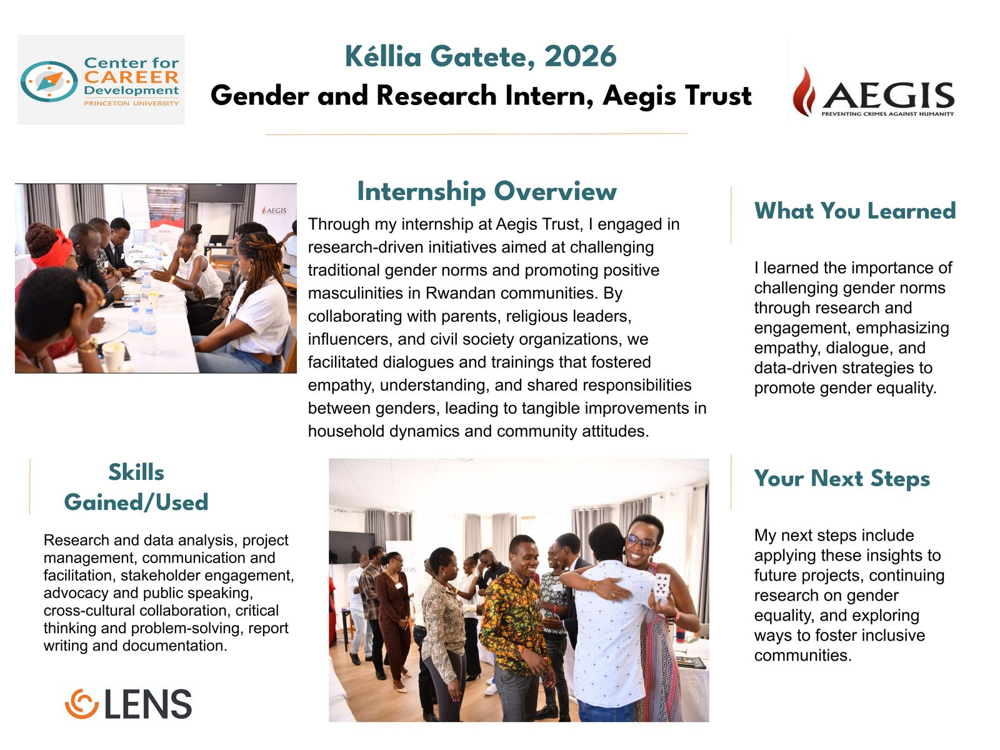

Gender & Research Intern · Youth Volunteer
Aegis Trust
Two summers of research and community work in Rwanda
Aegis Trust, Kigali, in partnership with the University of Rwanda Centre for Gender Studies and funded by the Embassy of Belgium. Project figures below are the programme's, drawn from its end-project report; my role was research and analysis inside it.
Before the labs, two summers at Aegis Trust — the first mentoring Youth Peace Clubs, the second on the research team for a two-year programme on gender norms and positive masculinities.
What the work was
A programme run across five districts — Huye, Nyagatare, Gasabo, Kicukiro, Nyarugenge — aimed at shifting gender norms through dialogue, training, and building capacity in the organizations that shape those norms: churches, schools, cooperatives, civil society.
The evaluation rested on four sources: a document review, SPSS analysis of the follow-up survey, semi-structured interviews with staff and the monitoring team, and a reflection workshop with community leaders and local authorities. Four ways of asking the same question, which is how you find out whether a number means anything.
The part that outlasts the project
Assessment criteria for positive masculinities, built from the baseline study and the national dialogues, and an awards scheme developed with the Centre for Gender Studies to recognize organizations doing this well. Fifty recipients were selected by district committees and awarded in early 2024 — 49 individuals, one civil society organization, and six couples.
Criteria and recognition are what remain once funding ends. That was the point of building them.
What the numbers did and didn't show
Reach exceeded target — 3,753 stakeholders against 2,600 planned, and 2,953 parents where 2,000 were budgeted, because partner organizations extended the invitation through their own constituencies at no extra cost. Attendance ran below invitation almost everywhere: 180 of 200 faith leaders, 96 of 100 Gender Champions.
Reach is the easy metric. Self-reported attitude change is the hard one, and it is exactly where a follow-up survey is weakest — which is why the interviews and the workshop mattered more than the percentages.
The part I still think about
The Ubumwe Sports Initiative put boys and girls on a basketball court together — a blunt instrument for a subtle problem, and it worked better than any workshop. What I remember is the hesitation dissolving over about twenty minutes, and a girl scoring while the boys cheered as loudly as the girls did.
That's not a data point. It doesn't go in a table and it isn't what the funder measures. But it's the thing that told me the intervention was landing, weeks before the survey said so — and it's why I don't fully trust a result I haven't also watched happen.
Why it's on an engineering site
Because it taught me what I now bring to test campaigns: a result nobody can act on isn't finished. Collection, analysis, and write-up are the easy two-thirds. Getting a finding into a form that changes what someone does is the rest of the job — and that's the same problem whether the audience is a district committee in Nyagatare or a design review.
Documentation

Drop file atassets/aegis/poster-gender.jpg

Drop file atassets/aegis/poster-youth.jpg